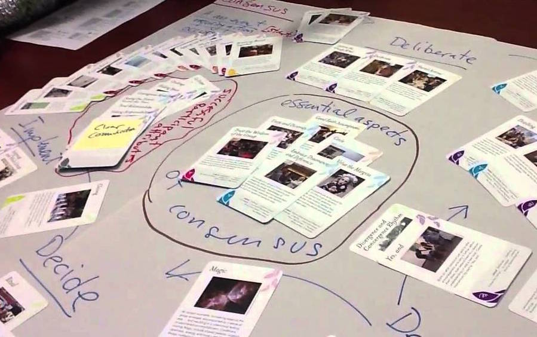

Donnees-a-voir
Documentation "Données à voir" La Terrasse Nanterre 2016

Bienvenue sur la documentation accompagnant l'exposition "Données à voir".
Vous pouvez proposer du contenu en proposant des modifications directement par GitHub ou bien en envoyant un mail à 0698@free.fr .
Index
Généralités
À propos d'empowerment
Data-journalisme
Informations sur les datas
Datas
Films / documentaires
Artistes / designers
Hardware / software
Spectacles
Présentation

La documentation accompagnant l’exposition ne présente pas les œuvres, elle les accompagne et permet d’aller plus loin dans la connaissance des datas. Le sujet principal est l’autonomisation citoyenne ( plus exactement l’ « empowerment », un terme qui ne se traduit pas parfaitement en français ). Cette documentation est issue de la veille réalisée par Benoît Ferchaud ( la Revue Créatique ), à laquelle est ajoutée celle de tous les participants de l’exposition, membres de l’équipe de réalisation de l’exposition « Données à voir ». Cela concerne autant des recherches préliminaires qui ont servi à affiner le projet curatorial, que d’autres parvenues après que le projet soit arrêté, défini, et venant comme autant d’évocations d’ailleurs ou de suites possibles. Cette documentation a vocation à être augmentée, au fil de l’exposition, par chacun y compris le plus simple visiteur. Pour cela elle est placée sur un dépôt en ligne que chacun peut copier ou auquel chacun peut participer. Le site entier peut être copié et déplacé. La participation peut être faite par des contributeurs aguerris à l’usage de ces outils, ou bien par un simple message qui proposera un ajout, une modification. Ce contenu est entièrement placé sous licence libre.
Licence
Ce site est intégralement sous Licence GPL.